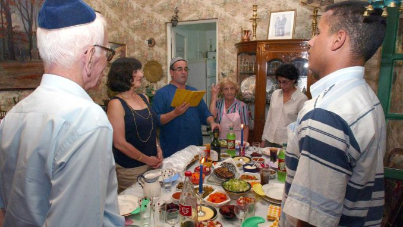

Les Juifs, peuple connu pour son grand mouvement et son déplacement à travers l'histoire, ont marqué, par leur passage, dans de nombreux pays soit l’Europe ou bien l’Afrique du Nord, cultures et civilisations.
Selon la provenance et l'origine de la nation d'Israël, la cuisine juive est divisée en deux parties principales. Juifs ashkénazes principalement d'Europe centrale et orientale et de Russie, et juifs séfarades d'Espagne, du Portugal, du Moyen-Orient et d'Afrique du Nord. Tous deux ont développé leur propre culture et nourriture dans différentes zones géographiques. En fait, les frontières qui les délimitent sont atteintes par les montagnes qui séparent le nord et le sud de l'Europe, du Caucase aux Alpes en passant par les Pyrénées. Le mouvement des Juifs à travers le monde a encouragé la division entre les deux groupes. Ce qui les rend variés dans la façon dont ils préparent les aliments en fonction du climat, des propriétés du sol et des ingrédients locaux. La cuisine séfarade, est loin de la cuisine juive nordique, se caractérise par l'huile d'olive, le citron, l'ail, les herbes, et parfois des épices qui sont très fortes. Les juifs grecs et turcs aiment la coriandre, l'aneth et les oignons frais ; les juifs habitantes d'Afrique du Nord aiment le cumin et le gingembre séché, et la cannelle est largement utilisée dans les plats espagnols salés et sucrés. Les séfarades aiment l'agneau et le poisson des eaux environnantes. Les pitas ou pains plats sont consommés dans tout le Moyen-Orient, la côte méditerranéenne et l'Inde. Les olives, les aubergines, les courgettes, les tomates, les poivrons et les haricots sont des ingrédients essentiels dans de nombreux plats. Les pâtisseries à base de pâtes filou, de noix et d'amandes, aromatisées à l'eau de rose ou de fleur d'oranger, sont plus populaires que les copieux riz au lait ou les desserts lactés dans le monde ashkénaze
Le shabbat est le jour de repos assigné au 7ème jour de la semaine Biblique, le samedi, qui commence dès la tombée de la nuit du vendredi soir. Le shabbat est officiellement jour chômé en Israël, et outre les magasins, les transports publics ne fonctionnent pas.12 Le mot vient de l'hébreu shābbath dérivant du verbe shābath « s'arrêter, se reposer ». Alors la question qui se pose pourquoi Dieu eu besoin du repos ? selon le Talmud, Dieu n’a pas besoin de repos par contre l’Homme oui, surtout pour régénérer son âme et se consacrer à la pratique des rituels de leur religion. L'observance du shabbat est mentionnée en de nombreuses occurrences dans la Torah, les plus notables étant Exode 20:8-11. Exode 20:8-11 « Souviens-toi du jour du repos, pour le sanctifier. Tu travailleras six jours, et tu feras tout ton ouvrage. Mais le septième jour est le jour du repos de l'Éternel, ton Dieu : tu ne feras aucun ouvrage, ni toi, ni ton fils, ni ta fille, ni ton serviteur, ni ta servante, ni ton bétail, ni l'étranger qui est dans tes portes ». Pendant le shabbat il est interdit de produire et cuire des aliments, pour certains juifs qui sont plus religieux il est aussi interdit de conduire ou d’allumer même l’électricité.Citons les recueils de Suzanne Harroch, une femme marocaine juive habitant actuellement à Rabat et elle est d’originaire d’Erfoud :13 « Le dîner du shabbat était copieux et le plus souvent constitué de deux plats. De nos jours, on prépare un met appeler L’kefta Sahraouya ou L’yaprek : de la viande hachée du Sahara puisque nous sommes les juifs d’Erfoud. » (S. Harroch) « Le pain servi sur la table du Shabbat est un pain spécial appelé L’khobz d’ddar (pain fait maison), » toujours d’après Suzanne Harroch dans la même émission.
Les interdits font partie d'une série de lois irrationnelles par lesquelles Dieu instille délibérément le doute en créant des situations contradictoires pour que chacun puisse le découvrir selon sa volonté. Par conséquent, dans la Bible, l'homme doit démontrer son obéissance à Dieu en obéissant aux lois alimentaires. Lorsque Noé a sauvé des animaux dans l'arche, Dieu lui a interdit de manger de la viande. Il formulerait alors un régime plus complet au mont Sinaï pour gouverner le peuple d'Israël. Par conséquent, les lois alimentaires sont typiques des Juifs qui sanctifiaient les gens en spiritualisant le monde matériel. Par la nourriture, Dieu invite l'homme à maîtriser ses sens, en le exposant à des attractions et en lui ordonnant de s’abstenir, de façon à maîtriser son plaisir et à laisser son corps servir son esprit. Nous pouvons donc manger n'importe quoi mais avec modération pour rester en bonne santé physique et morale. Donc on peut dire que l’idée fondamentale est que manger n’est pas seulement vitale mais il est aussi un acte spirituel et religieux.
La vie d'un pratiquant juif est rythmée par différentes fêtes religieuses, et chaque fête a des repas spécifiques. Il existe 7 fêtes religieuses prescrites par le TOURAH. Voici leur signification :
A. ROCH HACHANA L’année hébraïque ne commence pas le 1er janvier. La communauté juive fête le nouvel an à l’automne au mois de septembre. À l’occasion de cet évènement il y a un plat traditionnel partagé lors des repas festifs en famille c’est les pommes trempées dans le miel.
B. YOM KIPPOUR C’est la journée la plus sainte, sa date change entre mi-septembre et début octobre. Pendant un jour, les juifs ne doivent ni boire, ni manger ni avoir de relations sexuelles.
C. SOUKKOT Une fête qui est célébrée du 15 Tichri et dure 7 jours. Il s'agit d'un événement qui fait référence à la sortie de l'Égypte du peuple juif qui a été mis à l'épreuve par Dieu. Ils sont invités à construire des cabanes provisoires dans les quelles ils doivent au moins prendre leur repas. Il existe également un rituel autour de quatre espèces végétales.
D. HANOUKKAH C’est une fête pour les enfants et qu’il dure 8jours entre fin novembre et mi-décembre. Les enfants reçoivent notamment des toupies ou encore des pièces en chocolat.
E. TOU BICHVAT Cette fête célèbre l’environnement et les arbres, la fête est entre mi-janvier et mi-février. C’est une occasion pour que les pratiquants dégustent les fruits désignés dans le Torah comme les olives, les dattes, les figues, les grenades et les raisins
F. .POURIM Le 14 Adar dans le calendrier juif a lieu la fête de Pourim. Elle commémore notamment les événements tirés du livre d'Esther16, lorsque la population juive a échappé au génocide que voulait Aman, un conseiller du roi. Pendant cet événement, de grands banquets sont organisés mais c'est surtout le carnaval qui est célébré .
G. PESSAH La fête célèbre la naissance d’Israël et la sortie d’Egypte. Les croyants sont invités à ne pas consommer de produits fermentés et à privilégier le pain azyme.
H. CHVOAOUT Chavouot correspond à la Pentecôte chrétienne. Les familles se rassemblent et partagent un repas festif lors duquel on consomme des gâteaux à base de lait et de miel.
Rituel L’abattage rituel (Shehita), auquel le but principal de la Torah, implicitement mais non explicitement mentionné, est de vider le sang de la bête, qu'il est interdit de manger. Shehita (Annexe n2 : Abattage rituel) consiste à inciser la veine jugulaire, l'artère carotide, l'œsophage et la trachée en un mouvement continu avec un couteau long et fin sans incision. Le non-respect d'un seul de ces critères rendrait la viande inadaptée. La carcasse doit également être inspectée après l'abattage pour s'assurer que l'animal n'est pas atteint de défauts qui pourraient le faire mourir naturellement dans l'année et rendre suspect et donc inapproprié qu'il meure à l'abattage. L'une des lésions les plus invalidantes est les adhérences pulmonaires. Les juifs séfarades considéraient l'animal comme consommable si les poumons restaient scellés après le retrait de la lésion, mais les juifs ashkénazes n'acceptaient que les animaux aux poumons lisses.
Puisque la consommation des parties interdites dont le tendon de la hanche ou le nerf sciatique est interdite, il est nécessaire de pratiquer le nikkour : l'ablation du tendon inguinal, du suif et des gros vaisseaux sanguins environnants. Jusqu'au 19ème siècle, l'opération était quasi universelle, la viande était délicate et peu rentable, donc la viande avait un aspect "désagréable", ce que les autorités rabbiniques européennes, ainsi que le grand rabbin de New York, ont jugé bon ~ 22 ~ de déclarer l'arrière de l'animal inapte Mangé, le boucher les remet dans le circuit de distribution de la viande non casher. Ces sections s'étendent jusqu'à la 8e côte de la vache et comprennent le rumsteck, le filet, le faux-filet, le bifteck de flanc, le cintre, l'intestin principal et la côte, et sont les coupes de première classe les plus tendres de l'animal. Morceaux appelés de manière inappropriée "entrecôtes".
Un morceau de viande ou de volaille, même d'un animal abattu rituellement, contient encore du sang, qui doit être retiré avant la cuisson. Ce processus doit être effectué dans les trois jours suivant l'abattage, sinon le sang coagulera. Il se fait en trois étapes :
Lors de la cheriyya ("lavage"), la viande est immergée dans un récipient rempli d'eau et trempée sur toute sa surface pendant une demi-heure pour la ramollir afin d'absorber le sel. Le liquide est ensuite égoutté en plaçant la viande sur une plaque rainurée inclinée ;
Meli'ha ("salage") consiste à saler la viande de tous les côtés avec du sel (de préférence "sel kasher") puis à la placer sur une planche de bois pendant une heure ;
Pendant le hada'ha ("rinçage"), la viande est rincée deux fois ; cette procédure n'est pas nécessaire si la viande est rôtie sur une flamme nue ; de plus, elle est casher pour les organes riches en sang tels que le foie